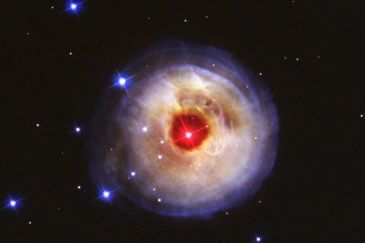
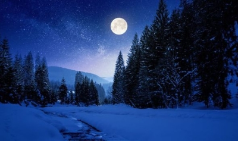
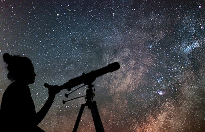
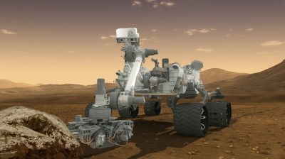

Inmiddels blijkt dat "afstand houden tot elkaar" en "plezier hebben met elkaar" goed kunnen samengaan. De eerste online workshop had zo'n 10 deelnemers, de tweede ca 25. De workshops worden live gegeven en gaan vergezeld van een begeleide on-line chat. Kinderen die behalve kijken ook mee willen chatten geven zich op met hun email-adres. Dit om ongepaste inbreng te kunnen herleiden en blokkeren. De moderator beantwoordt vragen of speelt ze door naar de live-les.

Over leeftijden valt moeilijk iets algemeens te zeggen. De focus ligt op de leeftijdsgroep van 10-12 jaar, maar er zijn deelnemers van 8 jaar en van 14 jaar die het dik naar hun zin hebben. Ook ouders laten regelmatig weten met interesse te kijken. Het leukste zijn de reacties van mensen die nog diezelfde avond naar buiten zijn gelopen om Venus, de maan of een meteorieten-regen met eigen ogen de zien.

Er wordt veel informatie over het heelal gegeven. Toch ligt de nadruk op "beleven". Naar boven staren en je realiseren waar je eigenlijk naar staat te kijken is de kern van de workshop. Daarom maakt voorbereiding op drie "doe het zelf" buiten-activiteiten deel uit van de workshop. Alledrie deze activiteiten zijn geschikt voor uitvoering met het gezin in een tijd met beperkte mogelijkheden voor reizen en fysiek contact.

De indeling van de lessen, die elk ca. 1 uur duren, is als volgt:
| Za 23 mei '20, 16:00 | Les 1: Wat is eigenlijk een ster, hoe groot zijn sterren, hoe ver zijn ze weg en wat zijn sterrenbeelden. |
| Za 30 mei '20, 16:00 | Les 2: Onze eigen ster, de zon, heeft 8 planeten. We bezoeken ze een voor een en maken een schaalmodel. |
| Za 6 juni '20, 16:00 | Les 3: De maan heeft veel invloed op aarde. Hoe zit het bijvoorbeeld met eb en vloed? En wat kwam er allemaal kijken bij de eerste maanreizen? |
| Za 13 juni '20, 16:00 | Les 4: Nevels, melkwegstelsels en zwarte gaten spreken tot de verbeelding. Wat zijn het precies? Kun je ze zelf zien? Hoe oud is het heelal, hoe ver kun je wegkijken en wat hebben ruimte en tijd met elkaar te maken. |
| Za 20 juni '20, 16:00 | Les 5: Hoe weten we al die dingen over het heelal. Wat is de beste telescoop ter wereld en wat is eigenlijk een radio-telescoop? Waarom duurt het zolang voor er weer een maanreis plaats vindt en gaan er echt mensen naar Mars? |

De inschrijving op de live stream dient te gebeuren door een meerderjarige ouder of verzorger, als volgt:
- Ga naar www.twitch.tv/jacques_de_hooge
- Klik op Sign Up.
- Vul username, password en email naar keuze in (voor verificatie), kies voor geboortejaar een jaartal waaruit blijkt dat u meerderjarig bent.
- Selecteer de juiste plaatjes om aan te tonen dat u geen computer bent (excuses voor deze onbeleefdheid).
- Vul de code in die u per mail ontvangt.
- Vul drie willekeurige interesses in, deze hebben geen invloed op de lessen.
Op het moment van uitzending (Iedereen kan 'm volgen, maar om te chatten moet 1 t/m 6 gedaan zijn) klikt u of uw kind op de onderstaande link. Scroll daarna op de nieuwe pagina eventueel omlaag om het uitzend-schema te zien.